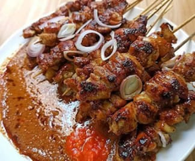

Bahan-bahan yang Dibutuhkan:
- 1 buah dada ayam segar, potong dadu
- 1 sendok makan kecap manis
- 1 sendok makan minyak goreng
- Tusuk sate secukupnya
Bumbu Kacang Spesial:
- 200 gram kacang tanah, sangrai dan haluskan
- 3 siung bawang merah
- 3 siung bawang putih
- 3 buah cabai merah keriting
- 1 sendok teh air asam jawa
- Garam dan gula merah secukupnya
- Air secukupnya
- Minyak goreng untuk menumis
Langkah-langkah Pembuatan:
- Bumbu Kacang Lezat:
- Haluskan bawang merah, bawang putih, dan cabai merah.
- Tumis bumbu halus hingga harum.
- Tambahkan air dan masukkan kacang tanah halus.
- Bumbui dengan garam & gula merah.
- Masak hingga mengental.
- Sate Ayam Empuk:
- Potong ayam dan tusuk dengan tusuk sate.
- Campurkan bumbu kacang, kecap, dan sedikit minyak.
- Olesi sate lalu diamkan 15 menit.
- Bakar hingga matang merata.
- Penyajian Menggoda:
- Siram bumbu kacang hangat di atas sate.
- Tambahkan kecap & cabai jika suka pedas.
- Nikmati dengan lontong agar lebih kenyang.
⬅ Kembali ke Halaman Utama
|

|